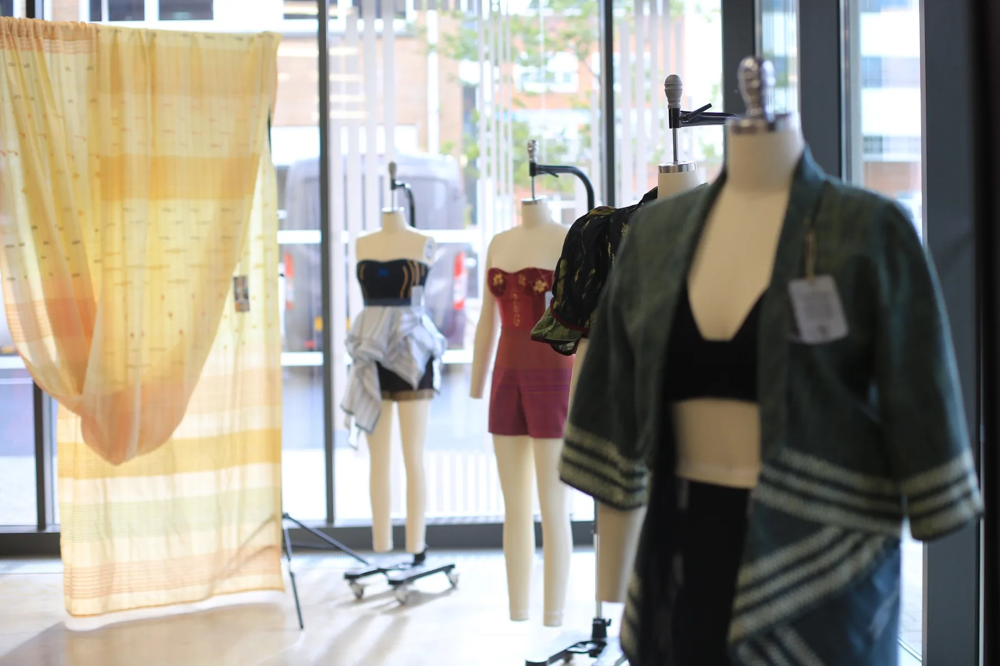

CARDIFF · THREADED HERITAGE
Physical + digital
Handloom fabrics and garments were presented with digital twins and interactive experiences.

BC–CTC–2024 · SRI LANKA × UK
Sri Lankan handloom knowledge explored through fieldwork, fashion design, digital twins and international exchange.
Explore digital twins ↓University of Moratuwa, Cardiff Metropolitan University and the University of Reading explored Sri Lankan handloom through field research, textile development, fashion design and digitalisation.
Funded by British Council Connections Through Culture.
Five provinces, documenting techniques, materials, patterns, colour and artisan knowledge.

High-resolution textile scans informed a six-outfit range. AI-assisted concepts were followed by technical review, prototype development and quality assurance.


Interactive 3D models extend access for research, teaching and interpretation.
The GLB is not downloaded when the page opens. Click to load it when you want to explore.

Observation, artisan profiling, interviews, sample development and production visits established the knowledge base for later design and digital work.


Artisan knowledge and local textile identities informed the collection and its digital representation.
Exhibition, comparative visits and dialogue connected craft heritage across contexts.
Handloom fabrics and garments were presented with digital twins and interactive experiences.

Welsh heritage and weaving sites opened comparison around materials, practice, markets and digitalisation.

The project continued through exhibition, seminar and cross-cultural knowledge exchange.

A round table connected academics, experts, entrepreneurs, retailers, writers, students and craft enthusiasts.
How can handloom remain living knowledge while gaining new forms of access, design value and visibility?
Challenges and opportunities in Sri Lanka's handloom industry.
Textile and fashion outcomes with artisans at the core.
Designer–artisan knowledge sharing and co-creation.
Interactive access to craft in cyberspace.
A parallel Cardiff study examined visual engagement with Sri Lankan handloom garments, including colour, design and outfit preference.
Open study module →

Funded through British Council Connections Through Culture, the project combined Sri Lankan handloom research with UK expertise in digitalisation, design and accessibility.
Research moved from field visits and textile sampling to fashion development, digital models, exhibitions and knowledge exchange.